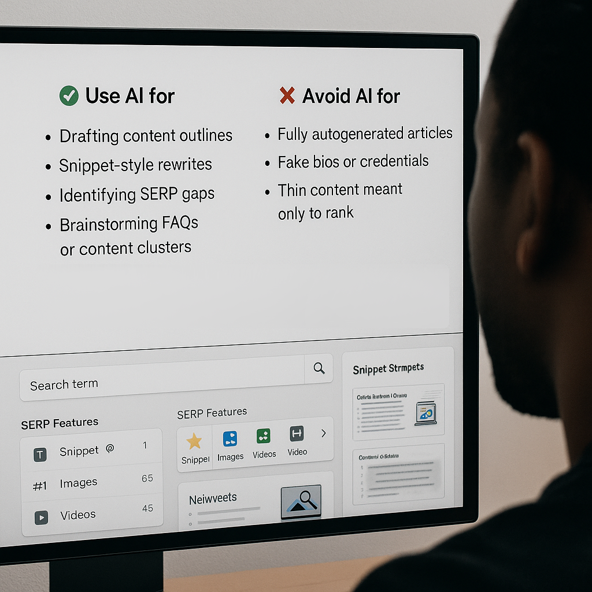
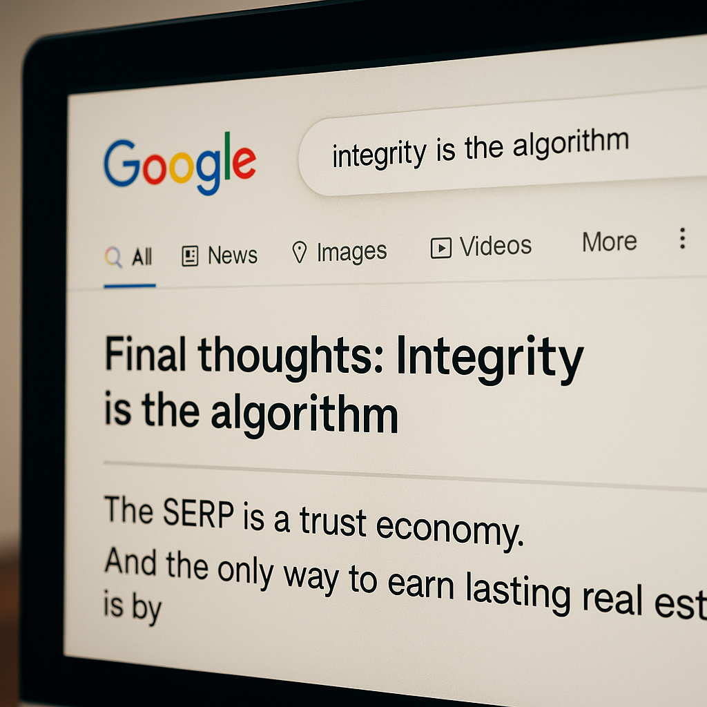

Think of Google’s first page as prime downtown property.
It's where the foot traffic happens.
It's where decisions are made.
And if you're not there, you’re essentially invisible to the 93% of users who never scroll past Page One.
But this digital gold rush has a dark underbelly.
As competition for top spots heats up, more marketers are chasing algorithms instead of serving audiences.
The result?
A SERP landscape polluted with keyword-stuffed junk, shady backlink farms, and AI-generated fluff that looks smart but says nothing.
This article is not about “hacks."
It’s about how to ethically own meaningful SERP real estate in a way that benefits not just your rankings but also your readers.
What Is SERP Real Estate (Really)?

The search engine results page (SERP) is no longer a neat list of ten blue links.
It’s a dynamic battlefield of content types, each vying for visibility and click-throughs.
Here are the most common “lots” you can occupy:
- 🔹 Featured Snippets – Quick answers at the top, often shown in boxes or bullet points.
- 🔹 People Also Ask (PAA) – A constantly expanding list of related questions and answers.
- 🔹 Knowledge Panels – Data-rich panels for entities like people, brands, or events.
- 🔹 Local Pack – The coveted “3-pack” map + business info combo.
- 🔹 Video & Image Carousels – Visual-first formats often pulled from YouTube or schema-optimized assets.
- 🔹 Sitelinks – Nested links beneath your main URL—typically earned by strong site architecture.
- 🔹 Top Stories / News – Reserved for recent, credible content tied to trending topics.
- 🔹 AI Overviews (SGE) – Google’s newest disruptor.
These AI-generated summaries now sit above traditional links, pulling insights from multiple sources to create a single synthesized answer.
They’re often zero-click by design, but if your content gets cited in one, it’s a signal of both authority and trustworthiness.
Landing a spot in an AI Overview isn’t about tricks.
It’s about writing in clear, evidence-based language that directly answers user intent.
Think: structured, accurate, cited content.
The Unethical Side of the Game
In the quest to dominate Page One, many fall into gray—or even black-hat—tactics:
- 📛 Keyword stuffing or content spinning.
- 👎 Private Blog Networks (PBNs) and link schemes.
- 🚫 Click-through manipulation with bots or incentivized clicks.
- ⚠️ “Parasite SEO” that abuses high-authority domains for low-quality quick wins.
These tactics may work temporarily.
But they erode user trust, violate Google’s guidelines, and lead to penalties or de-indexing.
Worse, they can damage your brand’s reputation permanently.
The Principles of Ethical SERP Ownership

If you want to win—and stay winning—play the long game:
👤 Put People Before Algorithms
Answer questions. Solve problems. Offer clarity.
📐 Follow E-E-A-T
Google favors content that shows:
- Experience
- Expertise
- Authoritativeness
- Trustworthiness
📚 Cite Transparently
Back up your claims. Link to reputable sources. Be the kind of site others want to cite.
🧱 Build Content Ecosystems
Organize your site into topic clusters and pillar pages that demonstrate depth—not just breadth.
How to Ethically Win SERP Real Estate
🔹 Understand Intent Like a Psychologist
Not all searches are the same.
Build content for:
- 🔍 Informational (How does carbon offsetting work?)
- 🧭 Navigational (OpenAI ChatGPT login)
- 🛒 Transactional (Buy recycled notebooks online)
- 📚 Comparative/Investigational (Notion vs. Evernote)
Design each page with intent in mind, not just keywords.
🔹 Target SERP Features Thoughtfully
Each SERP format has unique triggers.
Here’s how to earn your way in:
- ✨ Featured Snippets – Use paragraph + header structures and answer the query clearly in under 50 words.
- 🔍 PAA Boxes – Address related FAQs directly in your subheadings.
- 🎥 Video Packs – Repurpose your content into short YouTube explainers.
- 🖼️ Image Packs – Optimize file names, alt-text, and contextual relevance.
- 🧠 AI Overviews – Be the clearest, most credible voice in your niche—and cite authoritative sources.
🔹 Leverage Structured Data, Ethically
Schema markup helps Google understand your content structure.
Use it for:
- 📝 Articles
- 📋 FAQs
- 📦 Products
- 🛠️ How-Tos
- 🍝 Recipes
But don’t fake it.
Over-tagging or misusing schema will backfire.
🔹 Master Internal Linking
Think of internal links as helpful signage, not aggressive salespeople.
Link between related content clusters to show depth and reinforce topical authority.
🔹 Create Content Built to Pass a Manual Review
If a human Googler reviewed your site, would they trust it?
- Are your claims backed by reputable sources?
- Are you quoting real experts?
- Do you link out responsibly?
If not, you’re not ready for SERP dominance.
Case Snapshots: The Good, the Bad, and the Ethical
🟢 The Good
A Kenyan travel blog ranks for over 50 PAA questions in multiple countries by weaving short, clear definitions into every H2.
🔴 The Bad
A tech startup loses their snippet and visibility after deploying AI-generated posts with fake citations.
🟡 The Ethical Win:
A local bakery earns the Map Pack by gathering real Google reviews, maintaining consistent NAP listings, and publishing a “Bakery 101” guide with schema markup and photos.
The AI Factor: Ally or Ethical Trap?

✅ Use AI for
- Drafting content outlines
- Snippet-style rewrites
- Identifying SERP gaps
- Brainstorming FAQs or content clusters
❌ Avoid AI for
- Fully autogenerated articles
- Fake bios or credentials
- Thin content meant only to rank
Rule of thumb:
If you wouldn't trust your AI-generated content as a reader, neither will Google.
What Ethical SERP Ownership Feels Like
When you do it right, here’s what you get:
- ✅ Real traffic that converts
- ✅ Backlinks from people, not bots
- ✅ Citations in SGE/AI Overviews
- ✅ Peace of mind that your rankings are earned—not borrowed
Final Thoughts: Integrity Is the Algorithm

The SERP isn’t a leaderboard.
It’s a trust economy.
And the only way to earn lasting real estate is by consistently offering value, credibility, and clarity.
Winning the SERP is about more than rankings.
It’s about showing up with purpose, and building a digital presence that earns attention ethically, and keeps it.
Let the others play games.
You’re building something that lasts. 🛠️🌿